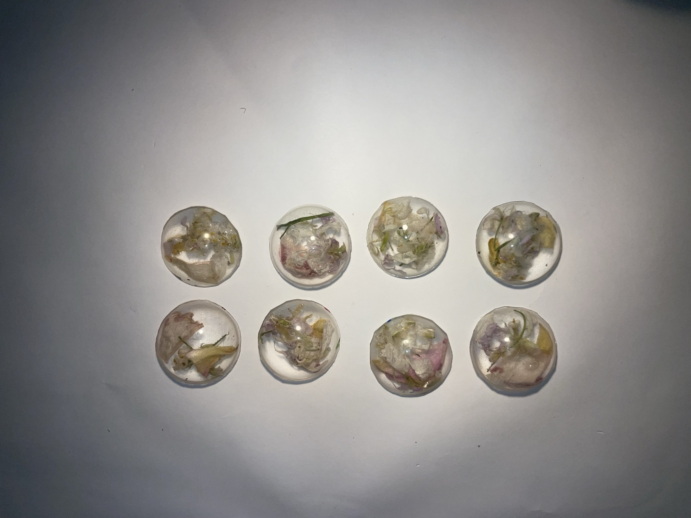
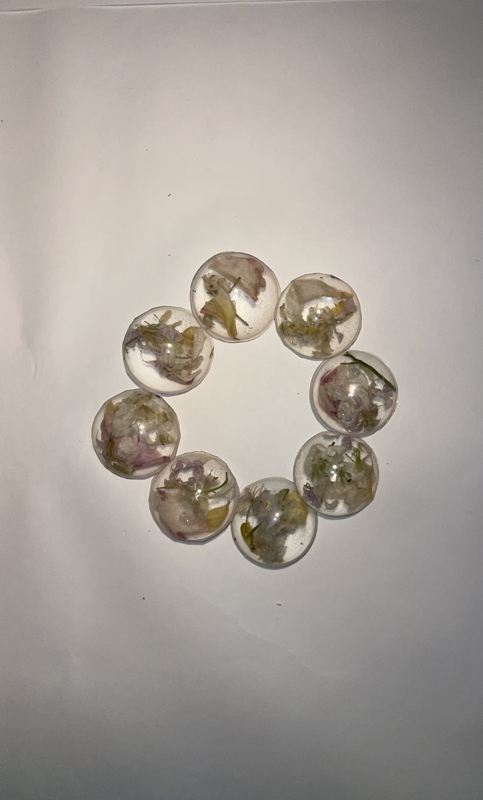

Project Name: Less is More: Respresenting Sustainability
through Minimalist Jewelry
The core theme of my project revolves around
environmental sustainability, expressed through personal
interests and curiosities. Specifically, it focuses on the
intersection of environmental responsibility and
aesthetics. Jewelry is often associated with luxury,
consumption, and lavishness, while sustainability concerns
itself with sufficiency, responsibility, and recycling. I
want to investigate the contrast between abundance and
simplicity. In a society where overconsumption and
quantity outweigh quality, I wish to argue that minimalism
carries just as much meaning. The tension I am exploring
lies in the question of how something so decorative can be
a tool for environmental awareness. Rather than using
mass-produced materials, I will use recycled/repurposed
materials, eco-friendly materials, or materials found in
nature (flowers, leaves, etc.) to craft bracelets,
necklaces, and rings. My intent for the jewelry is to
encourage eco-friendly behavior while embracing my
personal style.

